Cambridge Hackathon#
Benjamin D. Pedigo#
(he/him) NeuroData lab Johns Hopkins University - Biomedical Engineering
 bpedigo@jhu.edu
bpedigo@jhu.edu
 @bdpedigo (Github)
@bdpedigo (Github)
 @bpedigod (Twitter)
@bpedigod (Twitter)
 bdpedigo.github.io
bdpedigo.github.io

Cell types#
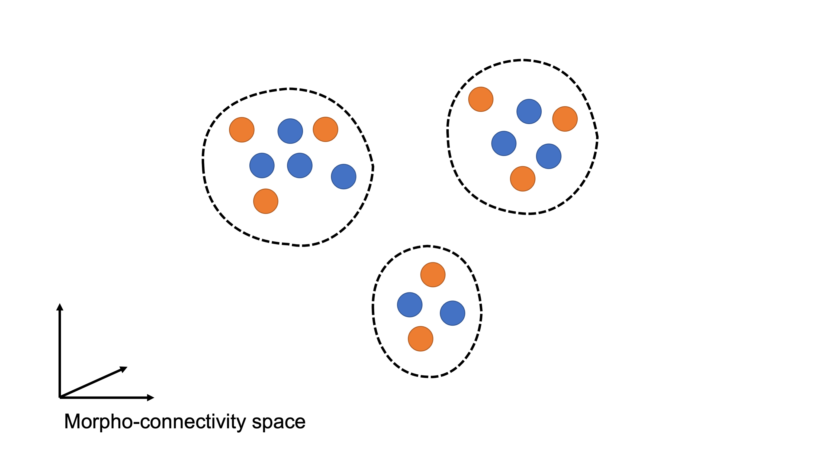
Cell types and “distribution shift”#
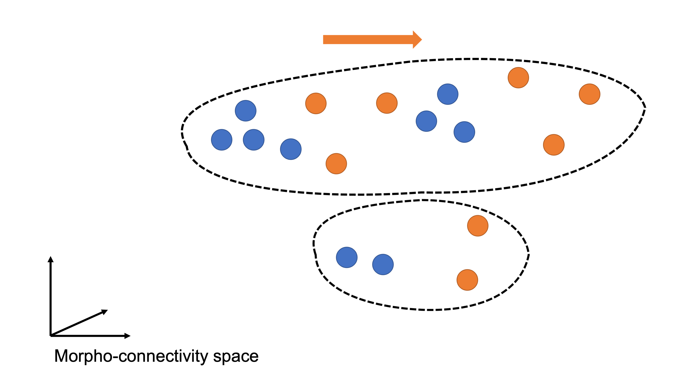
Matters for both “inductive” and “de novo” cell typing#
E.g. mapping labels from one dataset onto another via a matching, or
Creating new labels by clustering on a unified representation of datasets
Antennal lobe as a test case#
Using FlyWire data
Trying to match left/right
~1750 neurons per side
Has good labels to use for evaluation
NBLAST clustering suggests this could be happening#
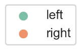
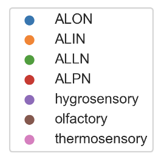

NBLAST embedding#

How to line things up, based on NBLAST?#
Say we have sets of objects \(I = \{i : i=1,...,n\}\) and \(J = \{j : j=1,...,m\}\)
For example, \(I\) is the set of neurons on the left, \(J\) those on the right.
Say \(S\) is a \(n \times m\) matrix such that \(S_{ij}\) has the NBLAST score between neuron \(i\) (left) and neuron \(j\) (right)
Linear assignment problem#
\(P\) is a permutation matrix.
\(P_{ij}\) is 1 if \(i \leftrightarrow j\), 0 otherwise.
Intuition:#
Maximize the total NBLAST scores of neurons which are matched, over the set of all matchings.
\(P^T\) reshuffles the columns of \(S\) to make the diagonal big
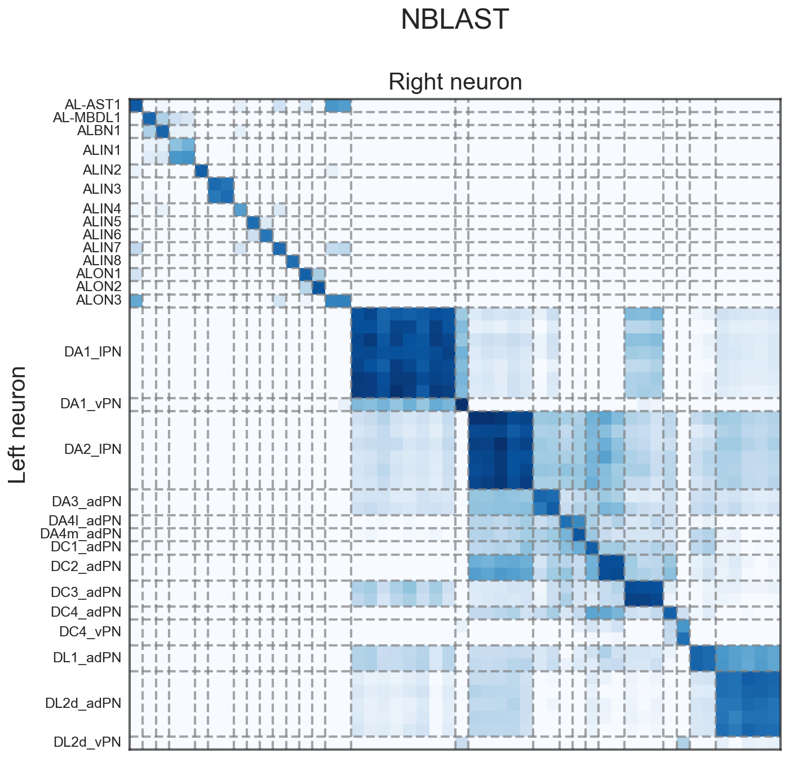
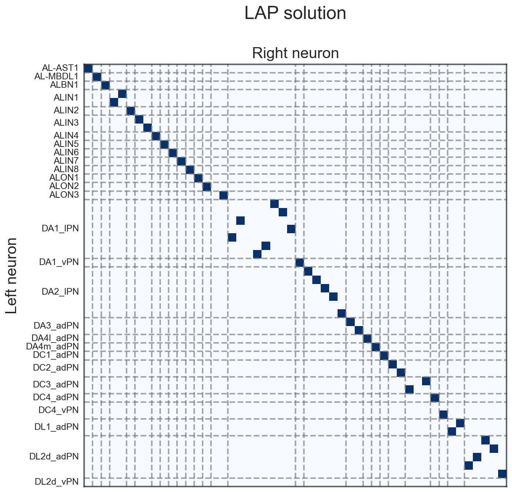
Issue with a “hard” matching?#
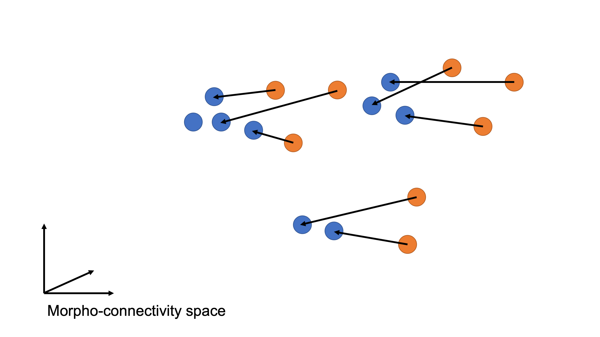
Issue with a “hard” matching?#
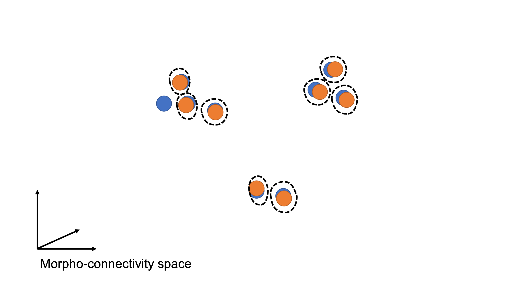
Smoother matchings#
Or, how stable are these matchings?
Add i.i.d. Gaussian noise to NBLAST matrix, \(\tilde{S}_{ij} = S_{ij} + Normal(0, 0.05)\)
Run linear assignment problem, get \(P^*\)
Take the average of 100 runs of the above.
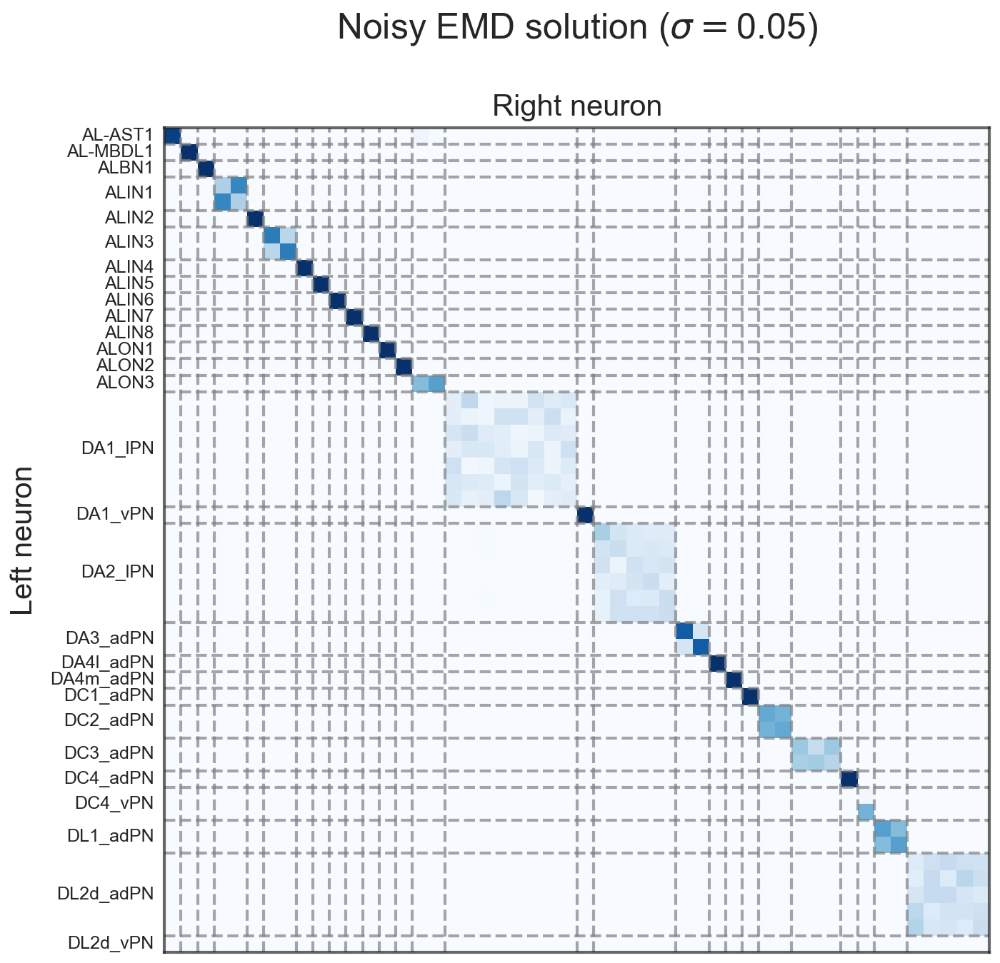
Regularized optimal transport#
\(D\) is a transportation matrix, i.e. rows/columns sum to 1, and \(D_{ij}\) represents the amount of “flow” or matching weight from \(i\) to \(j\).
\(\Omega(D)\) is a regularizer which promotes “smooth” solutions (i.e. not 0-1),
and \(\lambda\) is a weight on the regularization.
Intuition#
Maximize the NBLAST scores of soft-matched neurons, weighted by how strongly those neurons are matched, over the set of (somewhat smooth) soft matchings
Benefit (hopefully) of a smoother matching#
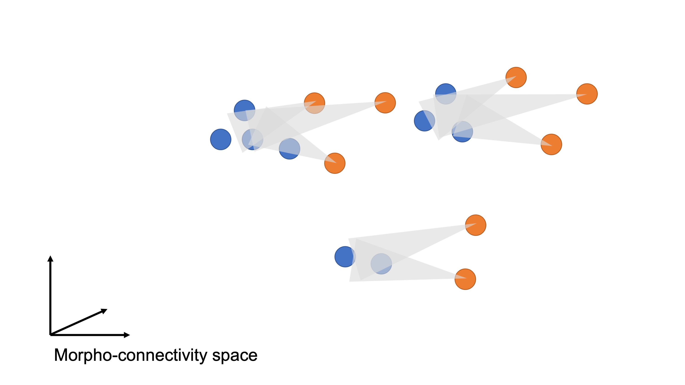
Benefit (hopefully) of a smoother matching#
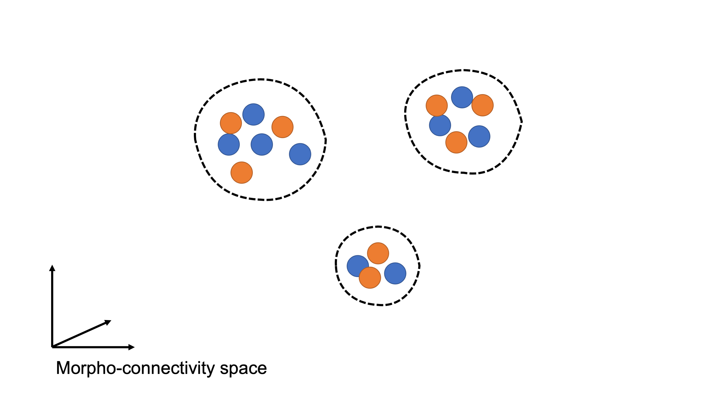
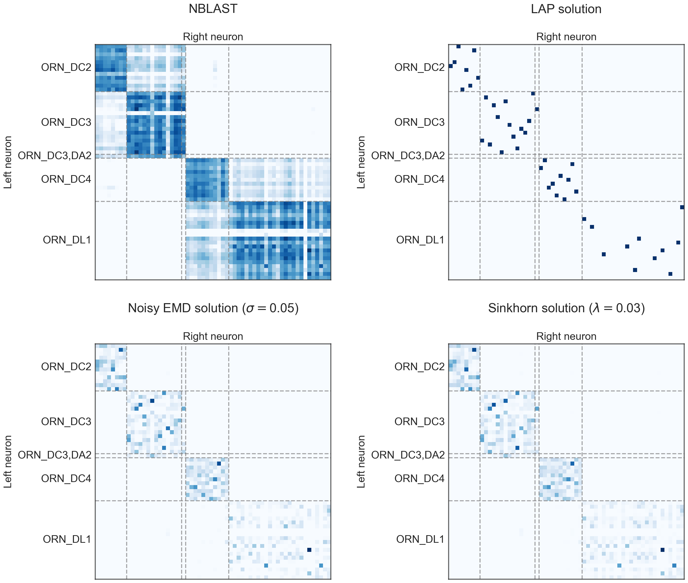
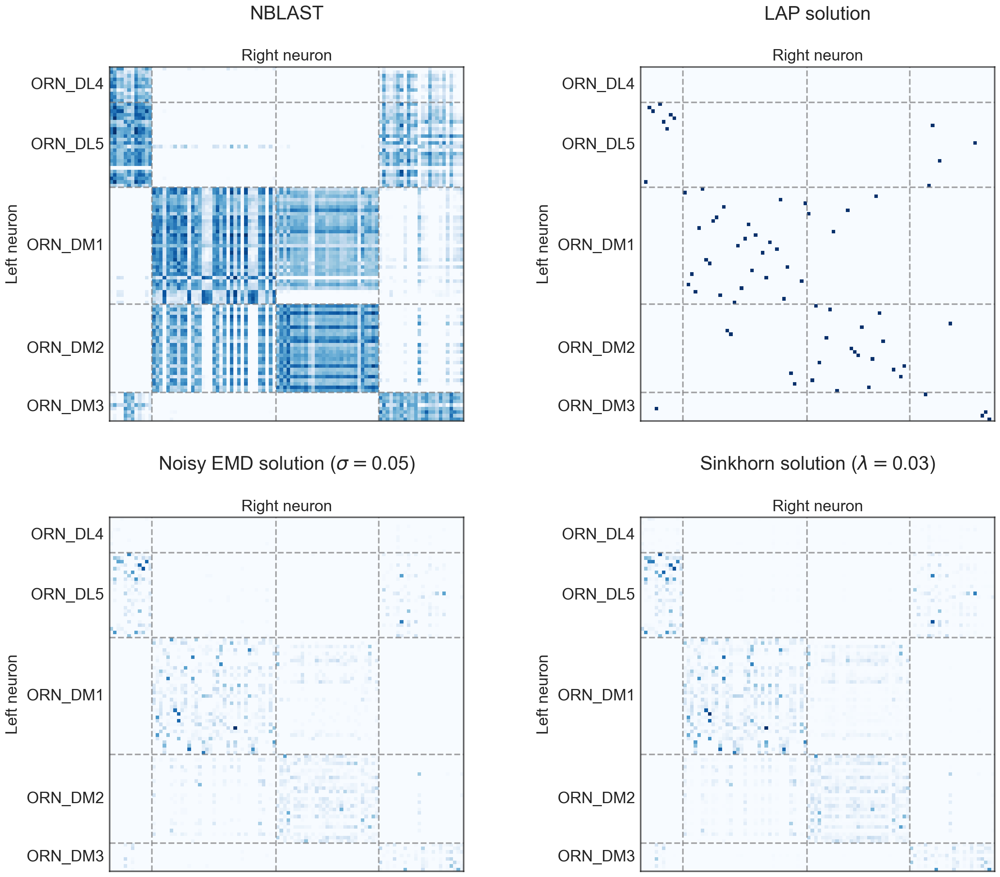
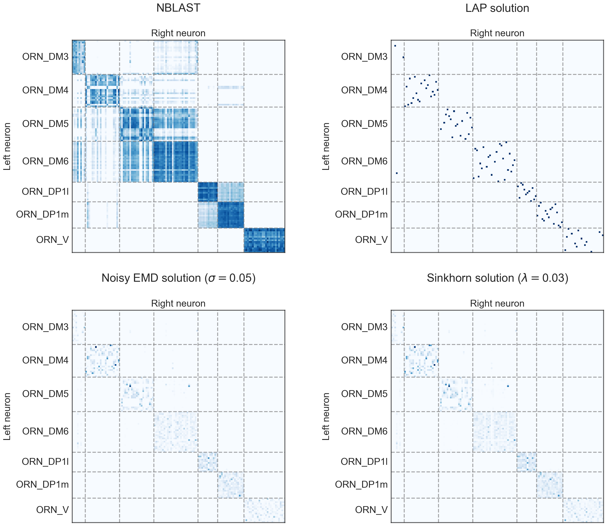
What if we want to include connectivity?#
Cosine similarity:#
for two vectors, \(a\) and \(b\)…
if we have a bunch of vectors stored in the matrices \(A\) and \(B\), then
since \(C_{ij} = \sum_k a_{ki} b_{kj}\)
Graph matching#
where \(I\) is the identity matrix - this represents a belief about the permutation of rows of \(B\) with respect to \(A\)… so more generally, could write:
Much like before, if we want to measure the “matchedness”
Can show this is equivalent to:
Accuracy on known labels#

Connectivity score (low is good)#

NBLAST score (high is good)#

Can we tell when we’re wrong?#


Can we tell when we’re wrong?#
For optimal transport on NBLAST, and grouping by label on the left side:


TODOs#
Generalizing to more than 2 datasets at a time
Scaling experiments
Optimal transport runs on central brain in ~minutes (on laptop)
Need to see whether graph matching can scale to that size
Seeds/soft seeds?
Using pre-known matchings in the optimization
Appendix#
Using this rough assignment to induce a matching for connectivity#
where \(F\) is the transportation solution we found above, which roughly maps neurons together based on their NBLAST similarity